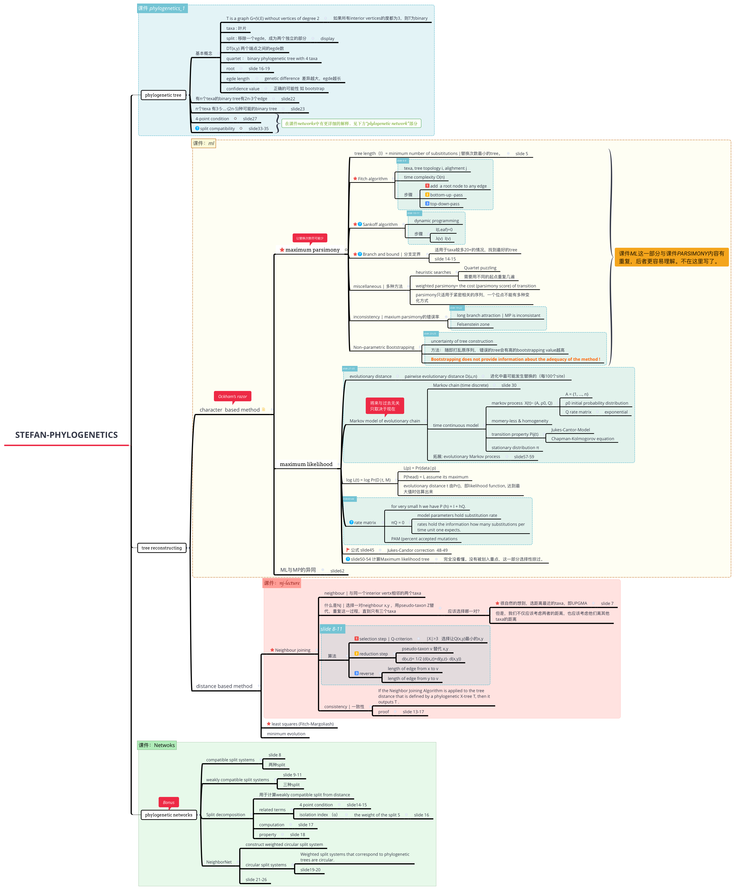

Stefan-Phylogenetics

phylogenetic tree
基本概念
T is a graph G=(V,E) without vertices of degree 2
如果所有interior vertices的度都为3，则T为binary
taxa : 叶片
split : 移除一个egde，成为两个独立的部分
display
DT(x,y) 两个端点之间的egde数
quartet ： binary phylogenetic tree with 4 taxa
root
slide 16-19
egde length
genetic difference 差异越大，egde越长
confidence value
正确的可能性 如 bootstrap
有n个texa的binary tree有2n-3个edge
slide22
n个texa 有3·5·...·(2n-5)种可能的binary tree
slide23
4-point condition
slide27
split compatibility
slide33-35
tree reconstructing
character based method
maximum parsimony
tree length（l）= minimum number of subsititutions |替换次数最小的tree。
slide 5
Fitch algorithm
texa, tree topology i, alighment j
time complexity O(n)
步骤
add a root node to any edge
bottom-up -pass
top-down-pass
Sankoff algorithm
dynamic programming
步骤
l(Leaf)=0
λ(v) l(v)
Branch and bound | 分支定界
适用于taxa较多20+的情况，找到最好的tree
silde 14-15
miscellaneous | 多种方法
heuristic searches
Quartet puzzling
需要用不同的起点重复几遍
weighted parsimony= the cost (parsimony score) of transition
parsimony只适用于紧密相关的序列，一个位点不能有多种变化方式
inconsistency | maxium parsimony的错误率
long branch attraction | MP is inconsistant
Felsenstein zone
Non–parametric Bootstrapping
uncertainty of tree construction
方法： 随即打乱原序列， 错误的tree会有高的bootstrapping value越高
Bootstrapping does not provide information about the adequacy of the method !
maximum likelihood
evolutionary distance
pairwise evolutionary distance D(u,n)
进化中最可能发生替换的（每100个site）
Markov model of evolutionary chain
Markov chain (time discrete)
slide 30
time continuous model
markov process X(t)~ (A, ρ0, Q)
A = {1, ..., n}
ρ0 initial probability distribution
Q rate matrix
exponential
momery-less & homogeneity
transition property Pij(t)
Jukes-Cantor-Model
Chapman-Kolmogorov equation
stationary distribution π
拓展: evolutionary Markov process
slide57-59
log L(t) = log Pr(D|t, M)
L(p) = Pr(data|p)
P(head) = L assume its maximum
evolutionary distance t 由Pr()，即likelihood function, 达到最大值时估算出来
rate matrix
for very small h we have P (h) ≈ I + hQ.
πQ = 0
model parameters hold substitution rate
rates hold the information how many substitutions per time unit one expects.
PAM (percent accepted mutations
公式 slide45
Jukes-Candor correction 48-49
slide50-54 计算Maximum likelihood tree
完全没看懂。没有被划入重点，这一部分选择性掠过。
ML与MP的异同
slide62
distance based method
Neighbour joining
neighbour | 与同一个interior vertx相邻的两个taxa
什么是NJ | 选择一对neighbour x,y ，用pseudo-taxon Z替代，重复这一过程，直到只有三个taxa
应该选择哪一对？
很自然的想到，选距离最近的taxa，即UPGMA
slide 7
但是，我们不仅应该考虑两者的距离，也应该考虑他们离其他taxa的距离
算法
selection step | Q-criterion
|X|>3 选择让Q(x,y)最小的x,y
reduction step
pseudo-taxon v 替代 x,y
d(v,z)= 1/2 (d(x,z)+d(y,z)- d(x,y))
reverse
length of edge from x to v
length of edge from y to v
consistency | 一致性
If the Neighbor Joining Algorithm is applied to the tree distance that is defined by a phylogenetic X-tree T, then it outputs T .
proof
slide 13-17
least squares (Fitch-Margoliash)
minimum evolution
phylogenetic networks
compatible split systems
slide 8
两种split
weakly compatible split systems
slide 9-11
三种split
Split decomposition
用于计算weakly compatible split from distance
related terms
4 point condition
slide14-15
isolation index （α）
the weight of the split S
slide 16
computation
slide 17
property
slide 18
NeighborNet
construct weighted circular split system
circular split systems
Weighted split systems that correspond to phylogenetic trees are circular.
slide19-20
slide 21-26